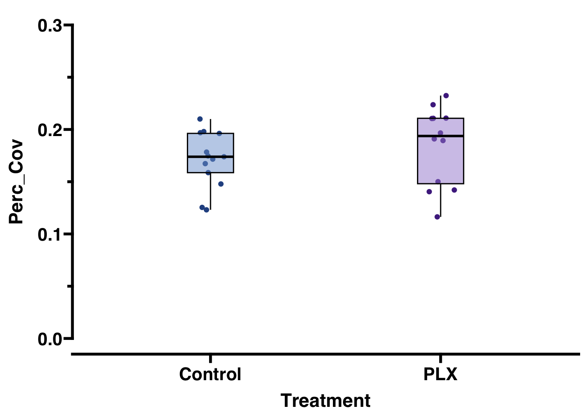
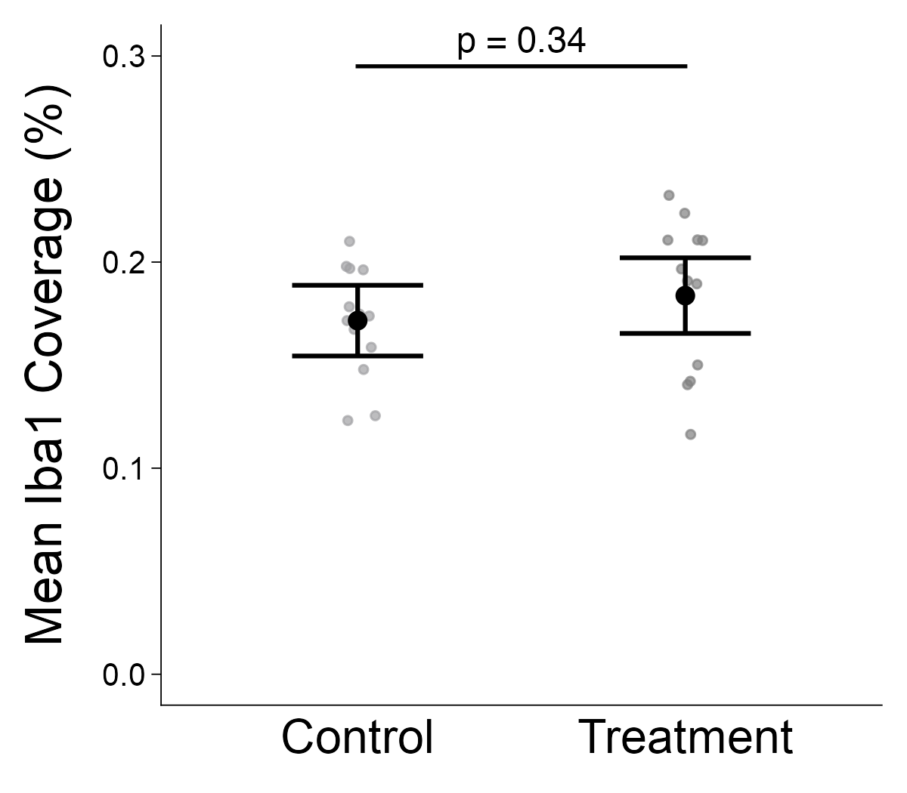

library(tidyverse) # data wrangling and ggplot2
library(skimr) # data wrangling
library(ggprism) # data visualization
library(ggpubr) # data visualization
# install.packages("glmmTMB")
library(glmmTMB) # frequentist model fitting
# install.packages("ggprism")
library(emmeans) # statisticsdata-analysis-replication
Data Analysis Replication
Minimum: 3 analyses, one descriptive statistical analysis, one visualization, and one inferential statistical analysis.
Introduction
Microglia are central nervous system (CNS)-resident immune cells with key roles in many neurological diseases. Microglia morphology changes in response to stimuli and is often used as a proxy for neuroinflammation and/or pathology. This paper tested for comparability across five common ImageJ (NIH) methods used to assess microglia morphology in mice. Analyses were conducted on identical photomicrographs, as well as individual microglia cells within the photomicrographs for direct comparison. The results of the five methods indicated a lack of comparability, leading the authors to conclude that studies should combine multiple methods to achieve an accurate representation of microglia morphology.
This paper conducted five ImageJ-based analysis techniques, two on full 40x photomicrographs and three on single microglia cells isolated from those photomicrographs. These photomicrographs were stained for Ionized calcium binding adapter molecule 1 (Iba1). Iba1 is a cannonical microglial marker used to examine microglial reactivity. The techniques were applied to identify alterations in microglial morphology or percent coverage between Treatment groups (Control vs PLX) that had pharmacologically manipulated microglia following an inflammatory stimuli. The five analysis techniques were:
- Percent coverage of Iba1 staining to show how much Iba1 positive staining is present in a given photomicrograph.
- Full photomicrograph skeletal analysis to calculate an averaged number of branches, branch endpoints, and branch length among cells in the field of view.
- Fractal analysis to quantify the spatial complexity of the individually isolated microglia.
- Single cell skeletal analysis to quantify microglial ramification and cell body size.
- Sholl analysis to determine the extent of branching of individual microglia via intercepts on concentric circles around the cell body.
Authors then fit hierarchical generalized linear mixed models using {glmmTMB} package in R. The error distribution (beta, negative-binomial, gaussian, gamma) used depended on the scale of the response variable. All models included a fixed effect for treatment. Sholl analysis included additional effects, described below. Random effects structure was used for aggregated, single cell, and Sholl analysis data sets. Inferences were based on a combination of coefficient estimates (β) and their 95% confidence intervals, differences between predicted conditional means (∆), effect sizes (d), and p-values following Tukey’s adjustments for multiple comparisons using {emmeans} package in R.
Here, I have replicated an aggregated analysis of Iba1 coverage, a single cell analysis of Iba1 coverage, and Sholl analysis of cell complexity. I also replicated the associated visualizations.
Preliminaries
Load required packages
Tell {knitr} where to output all of the figures associated with code chunks and where to find any images to include in the “.html” output.
knitr::opts_chunk$set(fig.path = "images/")Read in data files
perc_coverage <- read_csv("data/Perc_Coverage.csv", col_names = TRUE)Rows: 225 Columns: 4
── Column specification ────────────────────────────────────────────────────────
Delimiter: ","
chr (1): Treatment
dbl (2): Coverage, Perc_Cov
time (1): Animal_ID
ℹ Use `spec()` to retrieve the full column specification for this data.
ℹ Specify the column types or set `show_col_types = FALSE` to quiet this message.head(perc_coverage)# A tibble: 6 × 4
Animal_ID Treatment Coverage Perc_Cov
<time> <chr> <dbl> <dbl>
1 01:01 Control 15.5 0.155
2 01:01 Control 18.3 0.183
3 01:01 Control 17.6 0.176
4 01:01 Control 12.9 0.129
5 01:01 Control 23.8 0.238
6 01:01 Control 17.6 0.176perc_coverage_avg <- read_csv("data/Perc_Coverage_Avg.csv", col_names = TRUE)Rows: 25 Columns: 4
── Column specification ────────────────────────────────────────────────────────
Delimiter: ","
chr (1): Treatment
dbl (2): Avg_percent, Perc_Cov
time (1): Animal_ID
ℹ Use `spec()` to retrieve the full column specification for this data.
ℹ Specify the column types or set `show_col_types = FALSE` to quiet this message.head(perc_coverage_avg)# A tibble: 6 × 4
Animal_ID Treatment Avg_percent Perc_Cov
<time> <chr> <dbl> <dbl>
1 01:01 Control 17.5 0.175
2 01:05 Control 16.7 0.167
3 01:06 Control 12.3 0.123
4 01:07 Control 17.4 0.174
5 01:08 Control 19.7 0.197
6 01:12 PLX 14.0 0.140single_cell <- read_csv("data/Single_Cell.csv", col_names = TRUE)Rows: 675 Columns: 16
── Column specification ────────────────────────────────────────────────────────
Delimiter: ","
chr (1): Treatment
dbl (14): Cohort, Region, FractalDimension(DB), Lacunarity, Density(pixels/...
time (1): Animal_ID
ℹ Use `spec()` to retrieve the full column specification for this data.
ℹ Specify the column types or set `show_col_types = FALSE` to quiet this message.head(single_cell)# A tibble: 6 × 16
Animal_ID Cohort Treatment Region `FractalDimension(DB)` Lacunarity
<time> <dbl> <chr> <dbl> <dbl> <dbl>
1 01:01 1 Control 2 1.53 0.485
2 01:01 1 Control 2 1.56 0.324
3 01:01 1 Control 1 1.42 0.734
4 01:01 1 Control 2 1.62 0.316
5 01:01 1 Control 3 1.48 0.450
6 01:01 1 Control 2 1.63 0.301
# ℹ 10 more variables: `Density(pixels/area)` <dbl>, SpanRatio <dbl>,
# Circularity <dbl>, NumberOfEndpoints <dbl>, `BranchLength(um)` <dbl>,
# NumberBranches <dbl>, body_area <dbl>, cell_area_C <dbl>,
# body_perimeter <dbl>, cell_perim_C <dbl>sholl_data <- read_csv("data/sholl_data.csv", col_names = TRUE)Rows: 599 Columns: 6
── Column specification ────────────────────────────────────────────────────────
Delimiter: ","
chr (1): Treatment
dbl (4): Cohort, Distance(um), avg_intersection_n, intern_C
time (1): Animal_ID
ℹ Use `spec()` to retrieve the full column specification for this data.
ℹ Specify the column types or set `show_col_types = FALSE` to quiet this message.head(sholl_data)# A tibble: 6 × 6
Animal_ID Cohort Treatment `Distance(um)` avg_intersection_n intern_C
<time> <dbl> <chr> <dbl> <dbl> <dbl>
1 01:01 1 Control 5 5.74 6
2 01:01 1 Control 10 7.74 8
3 01:01 1 Control 15 10.2 10
4 01:01 1 Control 20 11.2 11
5 01:01 1 Control 25 12.0 12
6 01:01 1 Control 30 12.4 12Data Analysis/Visualization Replications
- Beta error distributions were used for proportions or percentages bounded between 0 and 1
- Mean percentage coverage
- Percentage coverage
- Lacunarity
- Density
- Circularity
- Negative-binomial error distributions were used for overdispersed integer counts
- Number of branches
- Branch lengths
- Number of endpoints
- Cell area
- Cell perimeter
- Mean number of branches
- Mean branch length
- Mean number of endpoints
- Mean number of cells
- Sholl mean number of intersections
- Gaussian error distribution was used for a continuous, ~normally distributed variable
- Fractal dimension
- Gamma error distribution with a log link function was used for a continuous, left-skewed variable
- Span ratio
Based on the results of previous studies, we expected the effect of distance from cell body on mean number of intersections to be nonlinear. Although to our knowledge no prior studies have explicitly modeled this nonlinearity, we chose to do so to improve inference reliability. We did this by including a natural cubic spline on distance from cell body in the model. In all models for single cell outcome measures, we included random intercepts for individual animal crossed with random intercepts for brain region. This random effects structure appropriately accommodated the hierarchical clustering of multiple data points from each mouse and the hierarchical clustering of data points from each individual within the three brain regions (n = 9 data points within each of three regions from each individual [n = 27 total data points from each mouse]).
In the models for cell-aggregated widefield outcome measures, we included random intercepts for individual mouse crossed with random intercepts for the binned number of cells that were used to obtain the outcome value (n = 9 data points from each mouse). This random effects structure accommodated hierarchical clustering of multiple aggregate data points from each mouse and the possibility that the number of cells used to calculate a given value might introduce unaccounted for variation.
In the Sholl analysis model, we included only a random intercept for individual mouse to accommodate the hierarchical clustering of multiple data points from each mouse (n = 25 distances at which the mean number of intersections was calculated from each mouse).
We fit all models in the frequentist framework using the package glmmTMB in the R statistical computing environment. We based inferences on a combination of coefficient estimates (β) and their 95% confidence intervals, differences between predicted conditional means (∆), effect sizes (d), and p-values following Tukey’s adjustments for multiple comparisons, all of which were obtained using the package emmeans in R.”
Analysis 1: Whole Average Percent Coverage (Figure 3a)
File description
Perc_Coverage_Avg.csv: File containing all microglia morphology data collected using percent coverage of Iba1 stain on photomicrographs taken from brain hemispheres.
- Animal_ID – Unique identifier for individual mice.
- Treatment – Categorical variable denoting whether each mouse received control diet or Plx5622 (PLX) diet.
- Avg_percent – The percentage of the image covered by dark pixels calculated from nine photomicrographs (3 brain slices per mouse and 3 photomicrographs (of retrosplenial, somatosensory, and entorhinal cortices) per brain slice) of Iba1-stained tissue converted to binary and then averaged to produce a single value per animal.
- Perc_Cov – The averaged percent coverage converted to a decimal.
Data analysis
Step 1: Exploratory data analysis of Perc_Cov ~ Treatment
Explicit descriptive statistics were not conducted in this paper, but I used skim() to check variable types and calculate five number summaries. I also plotted the spread of the data as a histogram and visualized mean Iba1 coverage (proportion) given Treatment.
# Determine number of observations (nrow), number (n_unique) of Treatments
# Check variable types and 5 number summaries
skim(perc_coverage_avg)| Name | perc_coverage_avg |
| Number of rows | 25 |
| Number of columns | 4 |
| _______________________ | |
| Column type frequency: | |
| character | 1 |
| difftime | 1 |
| numeric | 2 |
| ________________________ | |
| Group variables | None |
Variable type: character
| skim_variable | n_missing | complete_rate | min | max | empty | n_unique | whitespace |
|---|---|---|---|---|---|---|---|
| Treatment | 0 | 1 | 3 | 7 | 0 | 2 | 0 |
Variable type: difftime
| skim_variable | n_missing | complete_rate | min | max | median | n_unique |
|---|---|---|---|---|---|---|
| Animal_ID | 0 | 1 | 3660 secs | 8160 secs | 02:03:00 | 24 |
Variable type: numeric
| skim_variable | n_missing | complete_rate | mean | sd | p0 | p25 | p50 | p75 | p100 | hist |
|---|---|---|---|---|---|---|---|---|---|---|
| Avg_percent | 0 | 1 | 17.74 | 3.26 | 11.64 | 15.01 | 17.83 | 19.8 | 23.24 | ▃▇▇▇▇ |
| Perc_Cov | 0 | 1 | 0.18 | 0.03 | 0.12 | 0.15 | 0.18 | 0.2 | 0.23 | ▃▇▇▇▇ |
# Change Animal_ID variable type from time to character
perc_coverage_avg$Animal_ID <- format(strptime(perc_coverage_avg$Animal_ID,
format = "%H:%M:%S"),
format = "%H:%M:%S")
# Check Animal_ID is now a character type variable
str(perc_coverage_avg)spc_tbl_ [25 × 4] (S3: spec_tbl_df/tbl_df/tbl/data.frame)
$ Animal_ID : chr [1:25] "01:01:00" "01:05:00" "01:06:00" "01:07:00" ...
$ Treatment : chr [1:25] "Control" "Control" "Control" "Control" ...
$ Avg_percent: num [1:25] 17.5 16.7 12.3 17.4 19.7 ...
$ Perc_Cov : num [1:25] 0.175 0.167 0.123 0.174 0.197 ...
- attr(*, "spec")=
.. cols(
.. Animal_ID = col_time(format = ""),
.. Treatment = col_character(),
.. Avg_percent = col_double(),
.. Perc_Cov = col_double()
.. )
- attr(*, "problems")=<externalptr> # Determine how observations are distributed among subjects and treatments
with(perc_coverage_avg, table(Animal_ID, Treatment)) Treatment
Animal_ID Control PLX
01:01:00 1 0
01:05:00 1 0
01:06:00 1 0
01:07:00 1 0
01:08:00 1 0
01:12:00 0 1
01:13:00 0 1
01:15:00 0 1
01:16:00 0 1
02:01:00 1 1
02:02:00 1 0
02:03:00 1 0
02:04:00 1 0
02:05:00 1 0
02:06:00 1 0
02:07:00 1 0
02:08:00 1 0
02:09:00 0 1
02:11:00 0 1
02:12:00 0 1
02:13:00 0 1
02:14:00 0 1
02:15:00 0 1
02:16:00 0 1# Visualize Perc_Cov given Treatment
p1 <- hist(perc_coverage_avg$Perc_Cov)
p2 <- ggplot(perc_coverage_avg, aes(x = Treatment, y = Perc_Cov)) +
geom_point(aes(color = Treatment),
position = position_jitter(width = 0.06)) +
geom_boxplot(aes(fill = Treatment), width = 0.2, color = "black", alpha = 0.5) +
scale_y_continuous(limits = c(0.0, 0.3)) +
scale_color_prism("floral") +
scale_fill_prism("floral") +
guides(y = "prism_offset_minor") +
theme_prism(base_size = 16) +
theme(legend.position = "none")
p2

Step 2: Run generalized linear mixed model of Perc_Cov (Mean Iba1 coverage) given Treatment
Authors fit all models in the frequentist framework using the package {glmmTMB}.
NOTE: to fit a model in glmmTMB:
- specify a model for the conditional effects, in the standard R formula notation
- specify a model for the random effects, in the notation that is common to the {nlme} and {lme4} packages. Random effects are specified as x|g, where x is an effect and g is a grouping factor (which must be a factor variable, or a nesting of/interaction among factor variables). Formula examples:
- 1|block for a random-intercept model
- A model of crossed random effects (block and year) would be (1|block)+(1|year).
- choose the error distribution by specifying the family (family argument). Specify the function
- binomial, gaussian, poisson, Gamma from base R
- nbinom2, beta family(), betabinomial from family glmmTMB
- choose the error distribution by specifying the family (family argument).
- Distributions defined in base R and documented in ?family
- Distributions defined in ?glmmTMB::family glmmTMB
- optionally specify a zero-inflation model (ziformula argument) with fixed and/or random effects
- optionally specify a dispersion model with fixed effects
Components of generalized linear mixed model of Perc_Cov given Treatment
- Fixed effect for Treatment
- Beta error distribution, as Perc_Cov values are bounded between 0 and 1
# model
perc_cov_avg_model <- glmmTMB(Perc_Cov ~ Treatment,
family = beta_family(link = "logit"),
data = perc_coverage_avg)
summary(perc_cov_avg_model) Family: beta ( logit )
Formula: Perc_Cov ~ Treatment
Data: perc_coverage_avg
AIC BIC logLik deviance df.resid
-95.4 -91.8 50.7 -101.4 22
Dispersion parameter for beta family (): 141
Conditional model:
Estimate Std. Error z value Pr(>|z|)
(Intercept) -1.57444 0.06159 -25.56 <2e-16 ***
TreatmentPLX 0.08311 0.08746 0.95 0.342
---
Signif. codes: 0 '***' 0.001 '**' 0.01 '*' 0.05 '.' 0.1 ' ' 1Formula \[logit(\pi_i) = -1.57444 + 0.08311 \times {Treatment}\]
Step 3: Obtain inferential statistics using {emmeans}
Authors used {emmeans} to obtain coefficient estimates (β) and their 95% confidence intervals, differences between predicted conditional means (∆), effect sizes (d), and p-values following Tukey’s adjustments for multiple comparisons
Differences between predicted conditional means (∆) are reported in %, which I interpreted to be the absolute value in units of the response variable (mean Iba1 coverage). I reported my estimate of the difference in units of proportion.
# Model converted to log scale, want results on response scale
# Get point estimates (estimated marginal means) and 95% CIs
emm_r <- emmeans(perc_cov_avg_model, ~ Treatment, component = "response")
# Extract the point estimates and their 95% confidence intervals
(estimates_r <- summary(emm_r, type = "response")) Treatment emmean SE df asymp.LCL asymp.UCL
Control 0.172 0.00875 Inf 0.154 0.189
PLX 0.184 0.00936 Inf 0.165 0.202
Confidence level used: 0.95 # Get the pairwise comparisons
# estimate = difference between predicted conditional means (∆) and p-value
# why is estimate negative??
(pairwise_r <- pairs(emm_r, adjust = "tukey")) contrast estimate SE df z.ratio p.value
Control - PLX -0.0121 0.0128 Inf -0.949 0.3424# To obtain effect size using pooled standard deviation from model,
# need difference between means on log scale
emm <- emmeans(perc_cov_avg_model, ~ Treatment)
pairwise <- pairs(emm, adjust = "tukey")
(differences <- summary(pairwise)) contrast estimate SE df z.ratio p.value
Control - PLX -0.0831 0.0875 Inf -0.950 0.3420
Results are given on the log odds ratio (not the response) scale. # effect size (d)
# d = Difference between means / Pooled standard deviation
(effect_size <- eff_size(emm,
sigma = sigma(perc_cov_avg_model),
edf = df.residual(perc_cov_avg_model)
)
) contrast effect.size SE df asymp.LCL asymp.UCL
Control - PLX -0.00059 0.000627 Inf -0.00182 0.000639
sigma used for effect sizes: 140.9
Confidence level used: 0.95 Step 4: Visualize Mean Iba1 coverage ~ treatment
Scatter dot plot with estimated means and 95% CI
# set plot size
options(repr.plot.width = 2, repr.plot.height =4)
# define custom graph colors
gray_scale <- c("#A0A0A4", "#808080")
base <- ggplot(perc_coverage_avg, aes(x = Treatment)) +
geom_point(aes(y = Perc_Cov, color = factor(Treatment)),
position = position_jitter(width = 0.06),
size = 1,
alpha = 0.7) +
geom_pointrange(data = estimates_r,
aes(y = emmean, ymin = asymp.LCL, ymax = asymp.UCL),
size = 0.4) + # Add point estimates and confidence intervals
geom_errorbar(data = estimates_r, aes(y = emmean, ymin = asymp.LCL, ymax = asymp.UCL),
position = position_dodge(width = 0.9),
width = 0.4,
linewidth = 0.7) + # Add confidence intervals bars
scale_y_continuous(limits = c(0.0, 0.3)) +
ylab("Mean Iba1 Coverage (%)") +
scale_x_discrete(labels=c("Control", "Treatment")) +
xlab(NULL)
# Need to update p.value by hand
# add p_values
p_vals <- tibble::tribble(
~group1, ~group2, ~p.value, ~y.position,
"Control", "PLX", 0.34, 0.295
)
p1 <- base +
scale_color_manual(values = gray_scale) +
theme_prism(base_size = 16,
base_fontface = "plain") +
theme(legend.position = "none",
axis.line = element_line(linewidth = 0.2),
axis.ticks = element_line(linewidth = 0.2),
axis.text.y = element_text(size = 10),
axis.text.x = element_text(vjust=1.5), # move labels closer to axis
axis.ticks.x = element_blank()) +
add_pvalue(p_vals, label = "p = {p.value}", tip.length = 0, label.size = 4, vjust=-0.3) # added p-valueSave plot
ggsave("ERC_fig3a.png",
width = 4, height = 3.5, units = "in",
path = "images/")Comparison of Results


Figure 3a. Full photomicrograph analyses of microglial morphology were not sensitive to differences between control and treatments groups. Mean percent coverage of Iba1 staining per animal (3 brain slices per mouse and 3 photomicrographs per brain slice were used) is shown as individual data points. Treatment n = 12 mice, Control n = 13 mice. Results are presented as point estimates with 95% confidence intervals, which were estimated from mixed effects model.
NOTE: Mean Iba1 coverage analyzed/graphed as proportion of coverage, while mean ∆ appears to be reported by authors as |percentage of coverage|. Figure caption specifies negative-binomial error distribution, but statistical analysis section specifies average percent coverage was modeled with beta error distribution.
Analysis 2: Whole Percent Coverage
File description
Perc_Coverage.csv: File containing all microglia morphology data collected using percent coverage of Iba1 stain on photomicrographs taken from brain hemispheres.
- Animal_ID – Unique identifier for individual mice.
- Treatment – Categorical variable denoting whether each mouse received c ontrol diet or Plx5622 (PLX) diet.
- Coverage – The percentage of the image covered by dark pixels calculated from photomicrographs of Iba1-stained tissue converted to binary.
- Perc_Cov – The percent coverage converted to a decimal.
Data wrangling
Clean up data frame for hierarchical generalized linear mixed model
# Change Animal_ID variable type from time to character
perc_coverage$Animal_ID <- format(strptime(perc_coverage$Animal_ID,
format = "%H:%M:%S"),
format = "%H:%M:%S")
# Check binned number of cells per subject in perc_coverage
cells <- perc_coverage %>%
group_by(Animal_ID, Treatment) %>%
summarize(binned_cells = n())`summarise()` has grouped output by 'Animal_ID'. You can override using the
`.groups` argument.# Add binned number of cells to perc_coverage
perc_coverage <- full_join(perc_coverage, cells)Joining with `by = join_by(Animal_ID, Treatment)`Data Analysis
Step 1: Exploratory data analysis of Perc_Cov ~ Treatment
Explicit descriptive statistics were not conducted in this paper, but I used skim() to check variable types and calculate five number summaries. I also plotted the spread of the data as a histogram and visualized Iba1 coverage (proportion) given Treatment.
# Determine number of observations (nrow), number (n_unique) of Treatments
# Check variable types and 5 number summaries
skim(perc_coverage)| Name | perc_coverage |
| Number of rows | 225 |
| Number of columns | 5 |
| _______________________ | |
| Column type frequency: | |
| character | 2 |
| numeric | 3 |
| ________________________ | |
| Group variables | None |
Variable type: character
| skim_variable | n_missing | complete_rate | min | max | empty | n_unique | whitespace |
|---|---|---|---|---|---|---|---|
| Animal_ID | 0 | 1 | 8 | 8 | 0 | 24 | 0 |
| Treatment | 0 | 1 | 3 | 7 | 0 | 2 | 0 |
Variable type: numeric
| skim_variable | n_missing | complete_rate | mean | sd | p0 | p25 | p50 | p75 | p100 | hist |
|---|---|---|---|---|---|---|---|---|---|---|
| Coverage | 0 | 1 | 17.74 | 4.59 | 6.59 | 14.89 | 17.92 | 21.12 | 29.14 | ▂▅▇▆▁ |
| Perc_Cov | 0 | 1 | 0.18 | 0.05 | 0.07 | 0.15 | 0.18 | 0.21 | 0.29 | ▂▅▇▆▁ |
| binned_cells | 0 | 1 | 9.00 | 0.00 | 9.00 | 9.00 | 9.00 | 9.00 | 9.00 | ▁▁▇▁▁ |
# Determine how observations are distributed among subjects and treatments
with(perc_coverage, table(Animal_ID, Treatment)) Treatment
Animal_ID Control PLX
01:01:00 9 0
01:05:00 9 0
01:06:00 9 0
01:07:00 9 0
01:08:00 9 0
01:12:00 0 9
01:13:00 0 9
01:15:00 0 9
01:16:00 0 9
02:01:00 9 9
02:02:00 9 0
02:03:00 9 0
02:04:00 9 0
02:05:00 9 0
02:06:00 9 0
02:07:00 9 0
02:08:00 9 0
02:09:00 0 9
02:11:00 0 9
02:12:00 0 9
02:13:00 0 9
02:14:00 0 9
02:15:00 0 9
02:16:00 0 9# Visualize Perc_Cov given Treatment
p1 <- hist(perc_coverage$Perc_Cov)
p2 <- ggplot(perc_coverage, aes(x = Treatment, y = Perc_Cov)) +
geom_point(aes(color = Treatment),
position = position_jitter(width = 0.07)) +
geom_boxplot(aes(fill = Treatment), width = 0.2, color = "black", alpha = 0.5) +
scale_y_continuous(limits = c(0.0, 0.3)) +
scale_color_prism("floral") +
scale_fill_prism("floral") +
guides(y = "prism_offset_minor") +
theme_prism(base_size = 16) +
theme(legend.position = "none")
p2
Step 2: Run hierarchical generalized linear mixed model of Perc_Cov (Iba1 coverage) given Treatment
- Include fixed effect for Treatment
- Include random intercepts for Animal_ID, individual mouse, crossed with random intercepts for binned_cells, the binned number of cells that were used to obtain the outcome value (n = 9 data points per mouse).
- Random effects structure accommodated…
- hierarchical clustering of multiple aggregate data points from each mouse and
- the possibility that the number of cells used to calculate a given value might introduce unaccounted for variation.
- Beta error distribution, as Perc_Cov values are bounded between 0 and 1
perc_cov_model <- glmmTMB(Perc_Cov ~ Treatment + (1|Animal_ID) + (1|binned_cells),
family = beta_family(link="logit"),
data = perc_coverage)
summary(perc_cov_model) Family: beta ( logit )
Formula: Perc_Cov ~ Treatment + (1 | Animal_ID) + (1 | binned_cells)
Data: perc_coverage
AIC BIC logLik deviance df.resid
-796.2 -779.1 403.1 -806.2 220
Random effects:
Conditional model:
Groups Name Variance Std.Dev.
Animal_ID (Intercept) 4.738e-02 2.177e-01
binned_cells (Intercept) 1.473e-10 1.214e-05
Number of obs: 225, groups: Animal_ID, 24; binned_cells, 1
Dispersion parameter for beta family (): 107
Conditional model:
Estimate Std. Error z value Pr(>|z|)
(Intercept) -1.65878 0.06413 -25.86 < 2e-16 ***
TreatmentPLX 0.24164 0.08786 2.75 0.00595 **
---
Signif. codes: 0 '***' 0.001 '**' 0.01 '*' 0.05 '.' 0.1 ' ' 1Random intercepts do not seem to add explanatory power (very low amount of Variance in response variable explained)
Formula \[logit(\pi_i) = -1.65878 + 0.24164 \times {Treatment}\]
Step 3: Obtain inferential statistics using {emmeans}
Authors used {emmeans} to obtain coefficient estimates (β) and their 95% confidence intervals, differences between predicted conditional means (∆), effect sizes (d), and p-values following Tukey’s adjustments for multiple comparisons
Differences between predicted conditional means (∆) are reported in %, which I interpreted to be the absolute value in units of the response variable (mean Iba1 coverage). I reported my estimate of the difference in units of proportion.
# Model converted to log scale, want results on response scale
# Get point estimates (estimated marginal means) and 95% CIs
emm_r <- emmeans(perc_cov_model, ~ Treatment, component = "response")
# Extract the point estimates and their 95% confidence intervals
(estimates_r <- summary(emm_r, type = "response")) Treatment emmean SE df asymp.LCL asymp.UCL
Control 0.160 0.00862 Inf 0.143 0.177
PLX 0.195 0.01027 Inf 0.175 0.215
Confidence level used: 0.95 # Get the pairwise comparisons
# estimate = difference between predicted conditional means (∆) and p-value
# why is estimate negative??
(pairwise_r <- pairs(emm_r, adjust = "tukey")) contrast estimate SE df z.ratio p.value
Control - PLX -0.0352 0.0129 Inf -2.734 0.0062# To obtain effect size using pooled standard deviation from model,
# need difference between means on log scale
emm <- emmeans(perc_cov_model, ~ Treatment)
pairwise <- pairs(emm, adjust = "tukey")
(differences <- summary(pairwise)) contrast estimate SE df z.ratio p.value
Control - PLX -0.242 0.0879 Inf -2.750 0.0060
Results are given on the log odds ratio (not the response) scale. # effect size (d)
# d = Difference between means / Pooled standard deviation
(effect_size <- eff_size(emm,
sigma = sigma(perc_cov_model),
edf = df.residual(perc_cov_model)
)
) contrast effect.size SE df asymp.LCL asymp.UCL
Control - PLX -0.00226 0.000827 Inf -0.00388 -0.000635
sigma used for effect sizes: 107.1
Confidence level used: 0.95 Step 4: Visualize Iba1 coverage ~ treatment
Scatter dot plot with estimated means and 95% CI
# set plot size
options(repr.plot.width = 2, repr.plot.height =4)
# define custom graph colors
gray_scale <- c("#A0A0A4", "#808080")
base <- ggplot(perc_coverage, aes(x = Treatment)) +
geom_point(aes(y = Perc_Cov, color = factor(Treatment)),
position = position_jitter(width = 0.07),
size = 1,
alpha = 0.7) +
geom_pointrange(data = estimates_r,
aes(y = emmean, ymin = asymp.LCL, ymax = asymp.UCL),
size = 0.4) + # Add point estimates and confidence intervals
geom_errorbar(data = estimates_r, aes(y = emmean, ymin = asymp.LCL, ymax = asymp.UCL),
position = position_dodge(width = 0.9),
width = 0.4,
linewidth = 0.7) + # Add confidence intervals bars
scale_y_continuous(limits = c(0.0, 0.3)) +
ylab("Iba1 Coverage (%)") +
scale_x_discrete(labels=c("Control", "Treatment")) +
xlab(NULL)
# Need to update p.value by hand
# add p_values
p_vals <- tibble::tribble(
~group1, ~group2, ~p.value, ~y.position,
"Control", "PLX", 0.006, 0.295
)
p1 <- base +
scale_color_manual(values = gray_scale) +
theme_prism(base_size = 16,
base_fontface = "plain") +
theme(legend.position = "none",
axis.line = element_line(linewidth = 0.2),
axis.ticks = element_line(linewidth = 0.2),
axis.text.y = element_text(size = 10),
axis.text.x = element_text(vjust=1.5), # move labels closer to axis
axis.ticks.x = element_blank()) +
add_pvalue(p_vals, label = "p = {p.value}", tip.length = 0, label.size = 4, vjust=-0.3) # added p-valueSave plot
ggsave("ERC_fig3b.png",
width = 4, height = 3.5, units = "in",
path = "images/")Comparison of Results

Figure 3b. Photomicrograph-specific (unaveraged) percent coverage detected significantly more Iba1 staining in the treatment group compared to controls. Percent coverage of Iba1 staining, with multiple data points per subject, is shown as individual data points. Treatment n = 108 images (12 mice, 9 images/mouse), Control n = 117 images (13 mice, 9 images/mouse). Results are presented as point estimates with 95% confidence intervals, which were estimated from mixed effects model.
NOTE: Mean Iba1 coverage analyzed/graphed as proportion of coverage, while mean ∆ appears to be reported by authors as |percentage of coverage|. Figure caption specifies negative-binomial error distribution, but statistical analysis section specifies percent coverage was modeled with beta error distribution.
Analysis 3: Whole Skeletal Analysis
File description
Not available?
Data analysis
Result
“Full photomicrograph skeletal analysis only detected that microglia in the treatment group had fewer endpoints than controls. Mean microglial branch length was calculated by averaging the total length of branches in the photomicrograph by the total number of microglia in the photomicrograph. Full photomicrograph skeletal analysis did not detect differences in mean microglial branch length between photomicrographs from the treatment groups (p-value = 0.40, Mean ∆ = 28 μm, d = 0.002 Fig. 3c). Photomicrographs from the treatment group indicated that microglia had fewer mean endpoints than control microglia (p-value = 0.002, Mean ∆ = 18, d = 0.01; Fig. 3d). A difference in mean number of microglia per photomicrograph between the treatment groups was not detected (p-value = 0.60, Mean ∆ = 0, d = 0.01; Fig. 3e). A difference in mean microglial branches per cell per photomicrograph between treatment groups was not detected (p-value = 0.08, Mean ∆ = 13, d = 0.005; Fig. 3f).”
“Figure 3. Full photomicrograph skeletal analysis detected that microglia from the treatment group had fewer endpoints than the controls but did not detect differences in branch number or branch length. (c) Mean microglial branch length; (d) mean number of endpoints per cell per photomicrograph; (e) mean number of microglial cells per photomicrograph; and (f) mean number of microglial branches per cell per image. Individual data points are presented as gray dots. (d–f) Treatment n = 108 images (12 mice, 9 images/mouse), Control n = 117 images (13 mice, 9 images/mouse). Results are presented as point estimates with 95% confidence intervals, which were estimated from mixed effects models with a negative-binomial error distribution.”
Analysis 4: Single Cell Fractal Analysis
File description
Single_Cell.csv: File containing all microglia morphology data collected using single cell skeletal analysis and fractal analysis of Iba1-stained microglia randomly selected and isolated from photomicrographs taken from brain hemispheres.
- Animal_ID – Unique identifier for individual mice.
- Cohort – Categorical variable denoting the experimental cohort each mouse was in.
- Treatment – Categorical variable denoting whether each mouse received control diet or Plx5622 (PLX) diet.
- Region – Categorical variable denoting the brain region from which each photomicrograph was taken.
- Region 1: entorhinal cortex
- Region 2: primary somatosensory barrel field cortex
- Region 3: retrosplenial cortex.
- FractalDimension(DB) – Continuous variable calculated with fractal analysis of a statistical measure of pattern complexity of a microglial cell (Db).
- Lacunarity – Continuous variable calculated with fractal analysis of a geomatric measure of how the microglial cell/pattern fills space.
- Density(pixels/area) – Continuous variable calculated with fractal analysis of the number of pixels/area occupied by the microglial cell.
- SpanRatio – Continuous variable calculated with fractal analysis of the longest length/longest width of the microglial cell.
- Circularity – Continuous variable calculated with fractal analysis of how circular the microglia cell was.
- NumberOfEndpoints – Continuous variable of Iba1 microglia end points (n).
- BranchLength(um) – Continuous variable of Iba1 microglia branch lengths (μm).
- NumberBranches – Continuous variable of Iba1 microglia branches (n).
- body_area – Continuous variable of cell body area of microglia.
- cell_area_C – Continuous variable of cell body area of microglia rounded to the nearest whole number.
- body_perimeter – Continuous variable of cell body perimeter of microglia (μm).
- cell_perim_C – Continuous variable of cell body perimeter of microglia rounded to the nearest whole number (μm^2).
Data analysis
Result
“Fractal analysis detected that microglia from the treatment group had a less complex branching pattern than controls. Fractal analysis performed on isolated microglia detected that microglia from the treatment group had a less complex branching pattern (fractal dimension) than controls (p-value < 0.0001, Mean ∆ = 0.05, d = 0.65; Fig. 4a). However, differences in lacunarity (p-value = 0.72, Mean ∆ = 0.013, d = 0.004), circularity (p-value = 0.08, Mean ∆ = 0.013, d = 0.003), span ratio (p-value = 0.33, Mean ∆ = 0.03,d = 0.10), and density (p-value = 0.22, Mean ∆ = 0.004, d = 0.0001) between treatment groups were not detected (Fig. 4b–e).”
Analysis 5: Single Cell Skeletal Analysis
File description
Single_Cell.csv: File containing all microglia morphology data collected using single cell skeletal analysis and fractal analysis of Iba1-stained microglia randomly selected and isolated from photomicrographs taken from brain hemispheres.
- Animal_ID – Unique identifier for individual mice.
- Cohort – Categorical variable denoting the experimental cohort each mouse was in.
- Treatment – Categorical variable denoting whether each mouse received control diet or Plx5622 (PLX) diet.
- Region – Categorical variable denoting the brain region from which each photomicrograph was taken.
- Region 1: entorhinal cortex
- Region 2: primary somatosensory barrel field cortex
- Region 3: retrosplenial cortex.
- FractalDimension(DB) – Continuous variable calculated with fractal analysis of a statistical measure of pattern complexity of a microglial cell (Db).
- Lacunarity – Continuous variable calculated with fractal analysis of a geomatric measure of how the microglial cell/pattern fills space.
- Density(pixels/area) – Continuous variable calculated with fractal analysis of the number of pixels/area occupied by the microglial cell.
- SpanRatio – Continuous variable calculated with fractal analysis of the longest length/longest width of the microglial cell.
- Circularity – Continuous variable calculated with fractal analysis of how circular the microglia cell was.
- NumberOfEndpoints – Continuous variable of Iba1 microglia end points (n).
- BranchLength(um) – Continuous variable of Iba1 microglia branch lengths (μm).
- NumberBranches – Continuous variable of Iba1 microglia branches (n).
- body_area – Continuous variable of cell body area of microglia.
- cell_area_C – Continuous variable of cell body area of microglia rounded to the nearest whole number.
- body_perimeter – Continuous variable of cell body perimeter of microglia (μm).
- cell_perim_C – Continuous variable of cell body perimeter of microglia rounded to the nearest whole number (μm^2).
Data analysis
Result
“Single cell skeletal analysis detected that microglia from the treatment group had larger cell bodies, fewer and shorter branches, and fewer endpoints than controls. Microglia from the treatment group had a larger cell body perimeter (p-value = 0.002, Mean ∆ = 14 μm, d = 0.01; Fig. 4f) and area (p-value = 0.01, Mean ∆ = 148 μm2, d = 0.02; Fig. 4g) than controls. Microglia from the treatment group had fewer branches per cell (p-value = 0.002, Mean ∆ = 52, d = 0.04; Fig. 4h), shorter branch length (p-value < 0.0001, Mean ∆ = 315 μm, d = 0.03; Fig. 4i), and fewer endpoints per cell (p-value = 0.001, Mean ∆ = 23, d = 0.03; Fig. 4j) than controls.”
Analysis 6: Single Cell Sholl Analysis
File description
Sholl_Data.csv: File containing all microglia morphology data collected using Sholl analysis of Iba1-stained microglia randomly selected and isolated from photomicrographs taken from brain hemispheres.
- Animal_ID – Unique identifier for individual mice.
- Cohort – Categorical variable denoting the experimental cohort each mouse was in.
- Treatment – Categorical variable denoting whether each mouse received control diet or Plx5622 (PLX) diet.
- Distance(um) – Continuous variable of the Sholl circle distance from the microglial cell soma (μm).
- avg_intersection_n – Continuous variable of the average number of times a microglial branch intersected a Sholl circle.
- intern_C – Continuous variable of the average number of times a microglial branch intersected a Sholl circle rounded to the nearest whole number.
Data analysis
In the Sholl analysis, we also included a fixed effect for distance from cell body as well as a two-way interaction between treatment and distance from cell body.
Result
“Sholl analysis detected that microglia from the treatment group had fewer and less expansive branches than controls. Microglia from the treatment group had fewer branches intersecting the Sholl analysis circles than controls (p-value = 0.002, Mean ∆ = 2.29 intersections, d = 0.003; Fig. 4k).”
Discussion and Reflection
- Report includes a narrative summary about how successful the analysis replications were or were not - i.e., how well do the replicated results compare to those presented in the original paper?
- Report discusses and addresses any challenges encountered... missing data, unclear information about how data were processed in the original publication, etc.
- Report discusses where and possible reasons why the analysis replications might differ from the authors' original resultsWhat to Turn In
Within the repo, make a “data” directory in which you include any “.csv” or “.xlsx” or similar files that contain the original data for the paper as you either downloaded them as supplementary material or received them from the paper’s author.
Near your own results, embed some of the original figs/tables that you replicate. You can include code in one of the following formats to reference files in your “images” folder for inclusion in your document. The first alternative uses raw HTML, the second and third accomplish the same thing using {knitr} in an {r} code block in either a Quarto (Alternative 2) document.
TL/DR: I should be able to CLONE your repository and knit your “.Rmd” or “.qmd” file to show all of your completed work for the data analysis replication assignment. Practically speaking, this means that if your code reads in data from external files, such as “.xlsx” or “.csv” files, it should be general enough to work on ANY machine. Thus, you will want to have your code read any data from local files housed within your repository , i.e., in the “data” folder described above. Your repository should also include a PDF of the original paper with the analyses being replicated at the top level of the repo.